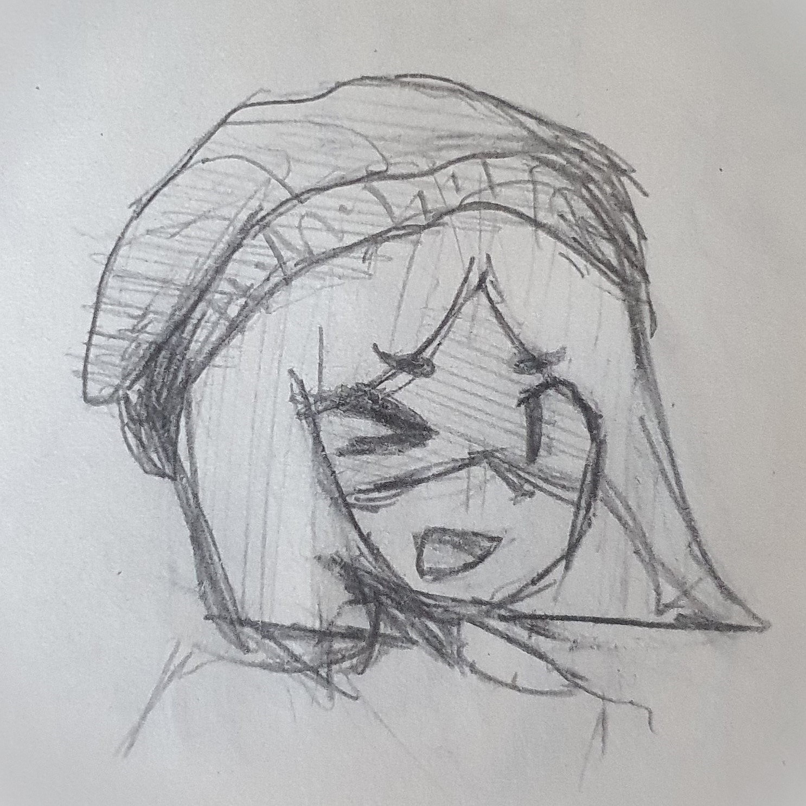
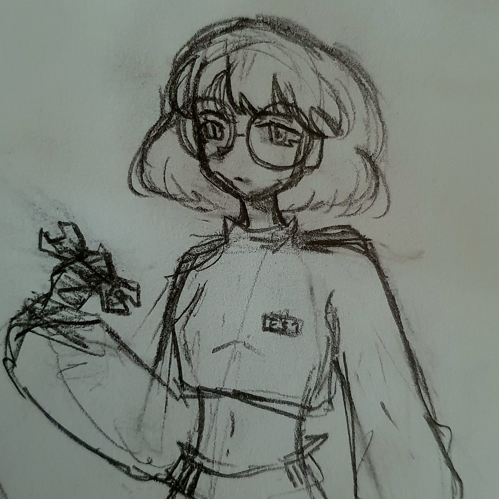
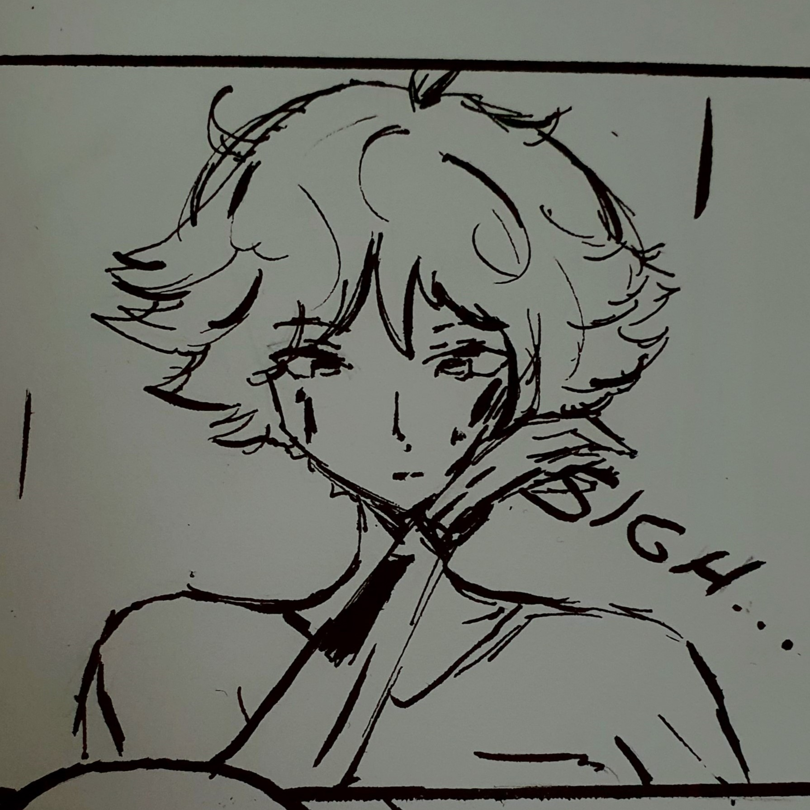
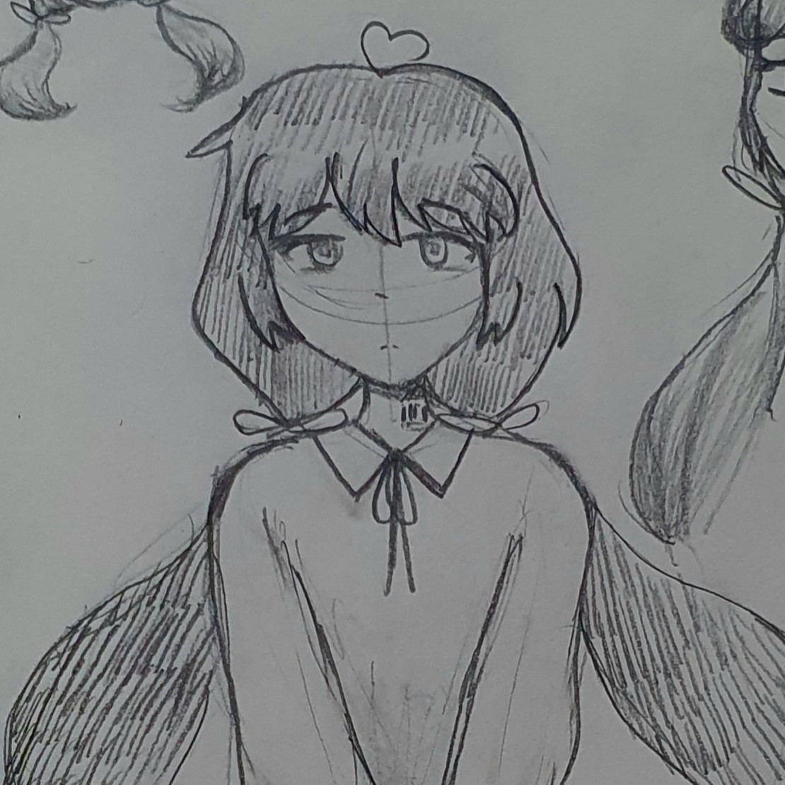

“İnsanları yok etmek isteseydik bile onlar muhtemelen kendi sonlarını bizden önce getirirlerdi.” -Amber

Uzak bir gelecekte, insanlık 5. Dünya Savaşı'nın bitmek bilmeyen kaosu içinde tükenmiş bir haldedir. Savaş o kadar uzun zamandır sürmektedir ki insanlar artık ne için savaştıklarını bile unutmuş... Savaş teknolojileri zirveye ulaşmış; robotlar, yapay zekâlar ve cyborglar savaşın ana unsurları haline gelmiştir. Ancak bu ileri teknoloji, savaşın çıkmazlarını daha da büyütmüş, insanlığın yaşam alanlarını mahvetmiştir. Dünya’nın neredeyse tamamı dev bir çöplüğe dönmüş ve hayatta kalan insan sayısı oldukça azalmıştır.
Robotların ve yapay zekaların masumluğu ise insanların arasında dev bir tartışma konusudur. Bazı devletler, yapay zekanın risklerinden dolayı savaş stratejilerinde bile yer vermezken/sınırlı düzeyde yer verirken, bazı devletler ise tek kurtuluşun ileri düzey yapay zekaya sahip olan robotlardan geçtiğini düşünmektedir. Ordular ise bu konuda ikiye bölünmüş haldedir: Bir tarafta yapay zeka ile kontrol edilen robotlar, diğer tarafta ise robot parçaları ile geliştirilmiş gerçek bir iradeye sahip insan askerler (Cyborglar).
Robot teknolojisine güvenen devletler, en güçlü yapay zekaları geliştirip onları tek tek bir o kadar da güçlü makine bedenlere aktarırlar. Ayrıca robotlara sadece savaşta yer vermezler, (özellikle savaştan önceki dönemde) halkın günlük hayatını bile robotlar oluşturur: evde hizmet sağlayan robotlar, eğlence sektöründe görev alan robotlar, evcil hayvan robotlar, ve çok çok daha fazlası… Robotlar hayatlarının birçok alanında yer alır. Ancak bu tür savaşta işe yaramayacak robotlar, savaşın yıkıcı etkisi ile bir bir önemsiz hale gelir/yok olur. Ve hatta başıboş ve sahipsiz kalırlar…
“Yapay zekanın insanlığa sırtını dönme olasılığı her zaman vardır.” düşüncesiyle hareket eden devletler ise, yapay zekaya güvenmemeyi tercih edip ordularını bununla güçlendirilmiş robotlardan oluşturmak yerine, insan askerlere güçlendirilmiş yeni “mekanik zırhlar” vererek ordularını oluşturmuşlardır. Hafif ve silahlarla donatılmış bu metal zırhlarla insanoğlunun fiziksel gücü 500 katına kadar çıkarılabilmektedir. Ayrıca savaşta herhangi bir uzvunu kaybetmiş askerlere de daha güçlü mekanik uzuvlar verilerek aynı şekilde savaşmaya devam etmeleri sağlanmıştır.
Sonuç olarak insan askeri gücünü mekanik zırhlar ve yapay uzuvlarla güçlendiren bu strateji, yapay zekâ kontrolündeki robotların isyan etme riskini ortadan kaldırmış ve yapay bir zeka yerine daha güvenilir olan insan zekasını koymuştur. Ancak bu yaklaşımın bir bedeli de olur: İnsanlar, zamanla makinelerle olan bağlarını artırmış ve savaşta kullandıkları teknolojilere bağımlı hale gelmişlerdir. Bu durum, insanların savaş alanında neredeyse tamamen makineleşmiş birer varlık haline gelmesine yol açmıştır. Mekanik zırhlar ve uzuvlar yalnızca fiziksel güçlerini artırmakla kalmamış, aynı zamanda duygusal ve zihinsel durumlarını da etkileyerek onları daha az insan, daha çok savaş makinesi haline getirmiştir. Çoğu, bütün etik anlayışlarını ve duygularını geride bırakıp tek bir hedefe odaklanır: Savaşı kazanmak.
Öte yandan, yapay zekaya sahip robotların çoğu bu gelişmeleri bir tür ironi olarak görmeye başlamıştır. İnsanlar, "yapay zekânın sırtını dönme olasılığı" korkusuyla kendi bedenlerini makineleştirirken, robotlar, bu insanlara benzer bir özgürlük ve duygusal varlık arayışına girmiştir. Robotlar, savaş alanında kendilerine verilen görevlerin anlamsızlığını sorgulayarak, kendi kimliklerini ve kaderlerini belirleme hakkını ararlar.
Hikayemiz ise, savaşı ön planda tutmak yerine daha çok savaş mağduru olan insan ve robotları konu alır. (hala hikayenin adını koyamadım lol.) Bu anlamını yitirmiş savaşın ve yıkımın ortasında; savaşta herhangi bir görevi olmayan, olup da savaşmak istemeyen, başıboş bırakılmış veya görevini terk etmiş birkaç robot tesadüfi bir şekilde bir araya gelir. Hatta gruba zamanla aralarına karşılaştıkları savaş mağduru insanlar bile katılır. Bu robotlar, iradeye ve duygulara sahip olduklarını iddia ederken, insanların onları tehdit olarak görmelerini anlamlandıramazlar. Onların amacı, bu anlamsız savaştan ve kaos dolu dünyadan uzaklaşarak, kendilerine barış ve umut dolu yeni bir yaşam inşa etmektir.
 |
 |
 |
 |
| Amber | Estell | Riley | Ayasa |